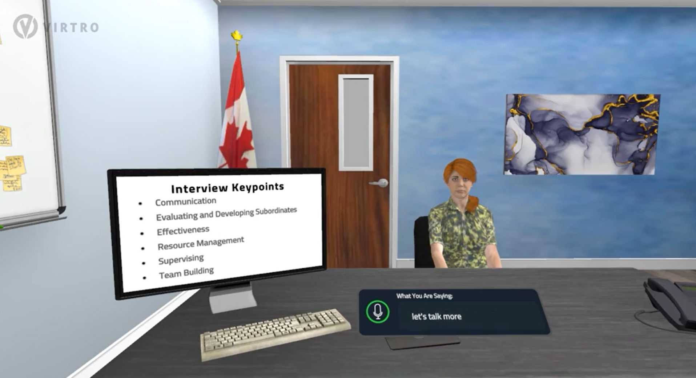
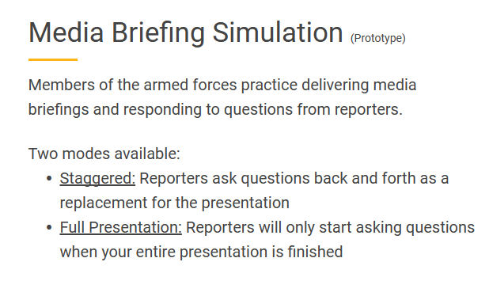
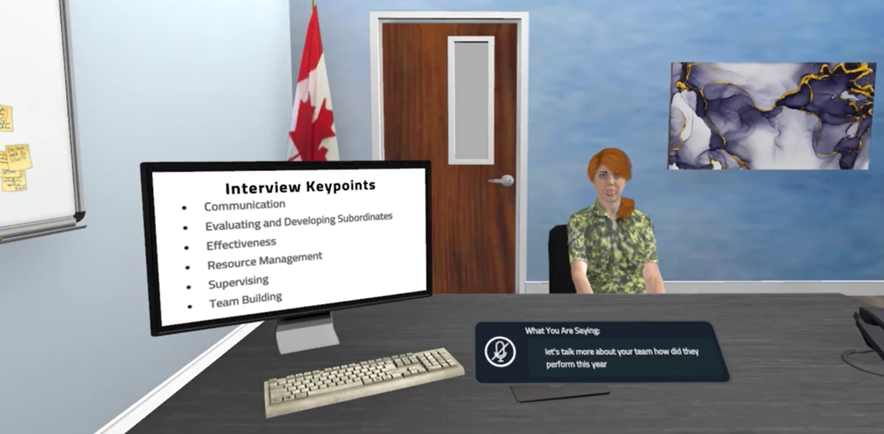
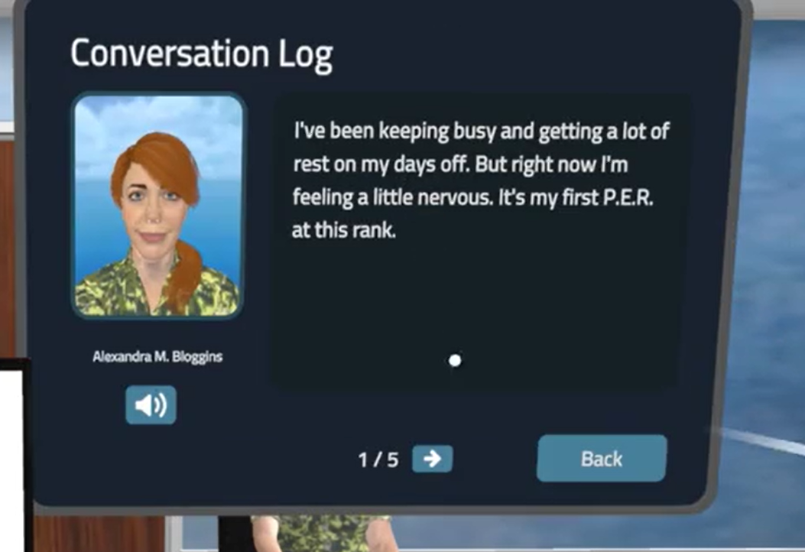
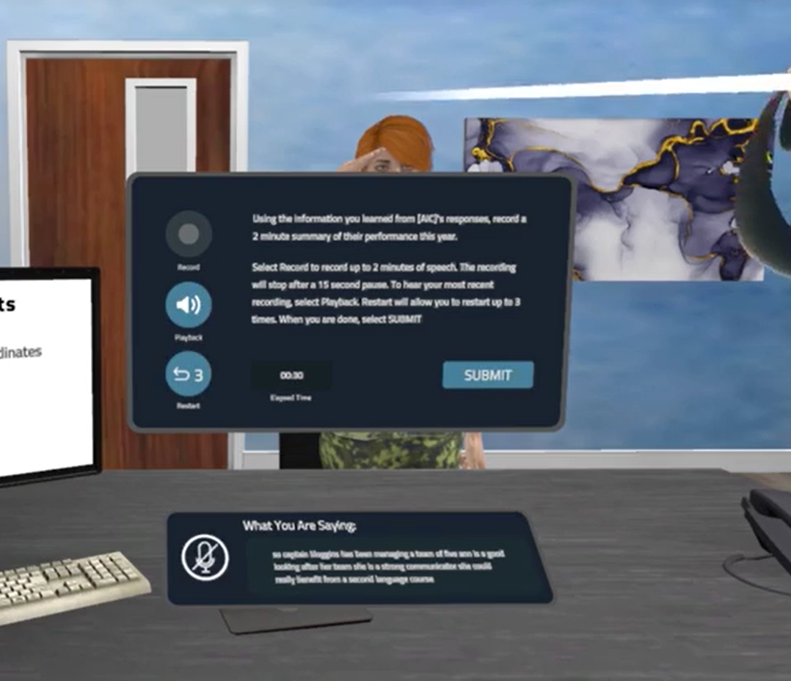
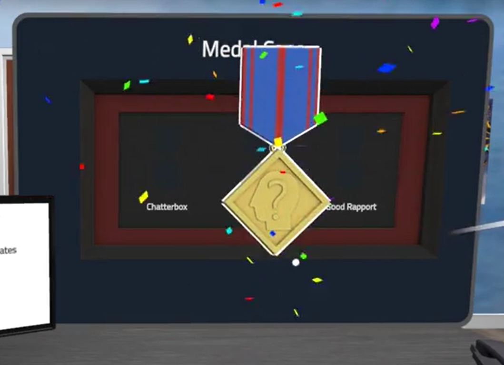

IDEaS Challenge: Beyond the classroom

Provide the Canadian Department of National Defence (DND) a prototype of immersive language applications to assist armed forces members practice their English and French skills.Meta QuestC#UnitySep 2020 - Dec 2022My company received funding from Canadian DND from the Innovation for Defence Excellence and Security (IDEaS) program. My team was required come up with and Media Briefing Simulation, Performance Review Simulation and Event Planning Simulation prototypes. My task was to implement the login, lobby and a part of the Performance Review Simulation (PE). The lobby is a place for the user to select which simulation they would like to practice. PE lets learners have the opportunity to improve their listening, speaking, and comprehension abilities through the process of evaluating their subordinates' performance. By doing so, they can provide valuable feedback that is both effective and constructive, ultimately promoting growth and improvement within the workplace.The login was originally implemented in BeConfident. What was different was we wanted to add localization. English AND French. At the time when this was implemented, all our apps were only in English. Adding another language was mind blowing. We wanted to let the user choose a language in login. This was the language that the text will be in. With the help of the framework team, I helped add a language selection into Login. The lobby was also originally implemented in BeConfident. In the lobby, I would be sent a list of scenarios used in this app. My task was to sort the scenarios by alphabetical order - English or French. I also had to add an image to each scenario. Depending on which category the scenario fell under, an assigned image needed to be attached.I also had to add an option in the lobby for users to select "Staggered" vs "Full presentation". However not all scenarios have this option. Only the Media Briefing Simulation category has this option. I came up with a way to display the toggle buttons on the Media Briefing Simulation scenarios. I would make the program remember if the user selects "Staggered" or "Full Presentation". This way when I enter the Media Briefing, I can pass that information to the developer developing Media Briefing. This let's that developer decide what to implement depending on what I send him/her. In addition, this allows both of us to work on different part of the code at the same time without worrying how the other person implements their scenes

My focus was on login and lobby so for PE simulation, I was more on the code design and code review side of things. We wanted to implement a conversation between the user and the AI character (AIC). This is where the user asks a question and the AIC will respond with an answer. We discussed how the AIC will enter the scene, how to start the conversation and what happens when the conversation finishes. We made sure there would be a smooth transition from each stage. The reason is so the animation for the AIC will seem natural as the AIC will stand and sit down. In addition, we had to make sure the microphone (which detects if the user is talking) is enabled or disabled depending if it is the user's turn or AIC's turn to talk. We made sure to track everything that was said and send this information back as a report for DND to analyze. This allows them to help improve their speaking skills

The login and lobby are not public so I can't share those screenshots. However, PE simulation is public on our website, and below are the results! The first one shows the conversation being tracked which gets sends to our backend

Below is the ending where the AIC will stand up

Below shows what challenges the user has passed to help them understand what they need to practice on

Because of login scene's localization, I was later tasked with standardizing the login scene for all of our VR and WebGL apps. This is so we can apply the same logic and reuse it.We have completed stage 1a and have been offered to continue working on stage 1b